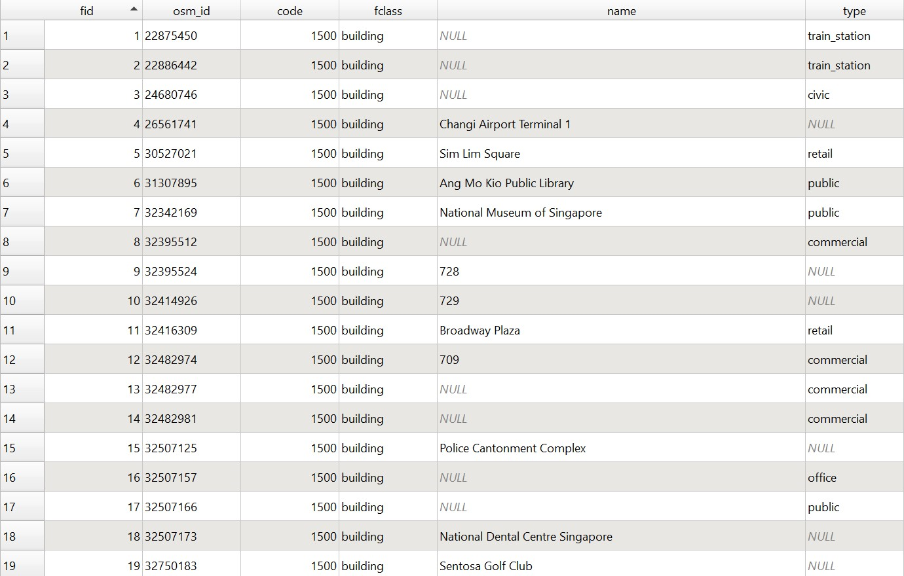

Methodology
Consideration: Iso - Area vs Buffer
A buffer area is the most common way to delineate a catchment area. It measures a Euclidean distance away from the point given. However, this convenience comes with some issue. Using Euclidean distances is essentially a straight line and can be misleading and impractical on a map.
A more credible and realistic approach to delineate the catchment area would be to use network distance i.e., the shortest distance approach. The method that provides this approach is Iso-Areas as Polygons (from Layer). The iso areas are mapped onto the walkable paths by Singaporeans making it more accurate.

In reality, a person cannot always travel in a straight line towards their destination but will have to turn at bends and curves depending on their walking paths.
1.0: Data Collection
1.1 Downloading geospatial data
First, download the following geospatial data from data.gov.sg:
Master Plan 2019 Subzone Boundary (No Sea)
Rail stations
Next, download geospatial data from geofabrick:
- Roads and Buildings data from OpenStreetMap(OSM) data sets
2.0 Data Preparation and Data Cleaning : OSM
2.1 Preparation of Road Network Layer
We imported the Road Network data(gis_osm_roads_free_1.shp) into QGIS. The Road Network data contains the Road network from Malaysia, Brunei and Singapore.
2.1.1 Selecting all road network within the study area
Using the Select Features by Polygon operation of QGIS, we then extracted the road network features that fall within Singapore study area.
2.1.2 Extracting roads except expressways
Under the Layers panel, right click on roads –> Open Attribute Table.
Click on Select features using an expression icon. The Select by Expression dialog window will appear. Under the expression pane, we keyed in the following to select expressways in Singapore:
"fclass"= 'motorway or "fclass"= 'motorway_link
In the attribute table, we then clicked on Invert Selection so that all the roads except expressways are selected. The selection was then saved.
2.2 Preparation of Buildings Layer
Import the Building Network data(gis_osm_buildings_free_1.shp) into QGIS. The building Network data contains the building network from Malaysia, Brunei and Singapore.
**2.2.1 Selecting all buildings within the
study area**
Using the Clip operation of QGIS, extract the building network features that fall with Singapore study area.
For the Input layer, we selected the input layer to clip i.e. gis_osm_roads_buildings_1.shp
For the Overlay layer, we selected the layer that will be used as reference i.e. SG_Subzone
After clipping, we saved the new clip as Buildings.
2.2.2 Categorising buildings within the iso areas
Upon inspecting the attribute table of the buildings layer, we found that some of the buildings were not categorised properly i.e. Null values.

Thus, we used Google street View as a reference and re-categorised these buildings.
2.2.2.1 Creating a new field called class for the buildings within the iso area
From the attribute table, we clicked on the toggle editing mode to create a New field
For Name, type 'class'
For Type, select Text (string)
For Length, select 30
Click OK
**2.2.2.2 Identifying buildings within the
iso-areas**
Import OpenStreetMap layer into QGIS.
Using Google Street view as a reference, we can compare and determine what class each building should be.
**2.2.2.3 Categorising the buildings within the
Iso Area**
Select the buildings to be classed and open the attribute table. Select the Open field calculator symbol and check Update existing field Click on the dropdown arrow and select class, then in the Expression Pane, type the correct class. The classifications we have decided on are:
Private Residential
Business
Civic
Education
Others
Public Residential
Religious
This will update all selected features to the correct class.
2.3 Preparation of Rail Stations
Using the steps learnt from the previous section, import Rail Stations data(master-plan-2019-rail-station-layer) into QGIS. The rail stations data contains the all the MRT station in Singapore.
**2.6.1
Extracting TEL Stage 4 stations**
a) Under the Layers panel, right click on G_MP19_RAIL_STN_PLà Open Attribute Table
{alt=“Table
Description automatically generated”}
b) Click on Select features using an expression {alt=“A picture containing text
Description automatically generated”} icon. The Select by Expression dialog window will appear.
c) At the upper left corner of the window, click on the Expression tab.
ii. Under the expression pane, key in the following:
“Name” = ‘FOUNDERS’’ MEMORIAL’ or “Name” = ‘TANJONG RHU’ or “Name” = ‘KATONG PARK’ or “Name” = ‘TANJONG KATONG’ or “Name” = ‘MARINE PARADE’ or “Name” = ‘MARINE TERRACE’ or “Name” = ‘SIGLAP’ or “Name” = ‘BAYSHORE’
The query statement in the Expression pane should look similar to this.
{alt=“Graphical user interface, application
Description automatically generated”}
d) Click on Select Features button and then close the window.
e) Using the steps learnt in the previous sections, save the selected features in a new GIS file which is in GeoPackage format. Call the layer TEL4_stations . The layer should look similar to this.
f) Next, remove the original G_MP19_RAIL_STN_PL layer from the QGIS project.
**2.6.2 Adding Entrances/Exits
to the TEL stage 4 stations**
**2.6.2.1 Creating
a new entrance/exit layer**
a) Go to Layerà Create LayeràNew Shapefile Layer
b) For file name, navigate to the Geopackage folder and name the layer MRT Station Entrance Stage 4.
c) For Geometry type, select Point from the dropdown arrow.
d) Change the CRS projection system back to EPSG 3412.
e) For New field, type STN_N.
f) For Type, select text
g) Click on Add to Fields List
A new row will be added.
{alt=“Graphical user interface, text, application, email
Description automatically generated”}
Using the same steps, add a new row where Name= EXIT_N and Type= integer
Click on OK
**2.6.2.2 Adding points to
TEL Stage 4 MRT stations**
a) Click on the toggle editing mode {alt=“Text, icon
Description automatically generated”}
b) Click on the Add Point Feature {alt=“Icon
Description automatically generated with medium confidence”}
c) Using the station picture in Figure 1 of Founders' Memorial in LTA website as a reference, manually click on the Founders memorial polygon to add the points.
{alt=“Diagram
Description automatically generated with low confidence”}
Figure 1
d) A dialog window will appear.
e) For id, type 1. For STN_N, type FOUNDERS' MEMORIAL. For EXIT_N , type 1.
{alt=“Graphical user interface, application
Description automatically generated”}
f) For the second exit, for id, type 2. For STN_N, type FOUNDERS' MEMORIAL. For EXIT_N , type 2.
g) Click on the toggle editing mode.
{alt=“Text
Description automatically generated”}
d) Click save.
DIY: Repeat the same steps for the entrances/exits of the other MRT stations. Use the TEL stage 4 entrance/exits in the LTA website as a reference.
Note: The id is the nth MRT entrances/exits of all where n>0. The EXIT_N represents the kth entrance/exit of that MRT station where K>0.
Using the steps learnt from the previous section, save the layer in Geopackage format. Call the layer MRT Station Entrance Stage 4.
{alt=“Map
Description automatically generated”}
**2.7
Preparation of ISO-AREAS of 800m with contour lines of 200m**
Now we will be implementing Iso-Area as Polygons (from Layer) as a way to delineate the catchment areas to derive the accessibility to the TEL Stage 4 MRT stations
**2.7.1
Creating ISO AREAS**
DIY: Using the steps learnt previously, select the entrance/exit points of FOUNDERS' MEMORIAL
a) In the menu bar, go to Processingàtoolbox.
b) In toolbox, click on the dropdown arrow beside QNEAT3
c) Click on the dropdown arrow beside Iso-Areas.
{alt=“A picture containing graphical user interface
Description automatically generated”}
d) Double click on Iso-Area as Polygons (from Layer)
e) The dialog window for Iso-Area as Polygons (from Layer)
will appear.
· For Vector layer representing network, select roads except motorway from the drop-down list.
· For Start Points, select MRT Station Entrance Stage 4 from the drop-down list
· For Unique Point ID field, leave it as fid
· For Size of Iso-Area (distance or time value), type 800.
· For Contour Interval, type 200
Keep the rest of the entries as default.
Your screen should look similar to the screenshot below.
{alt=“Graphical user interface, text, application
Description automatically generated”}
When you are ready to run the function, click on run
When the process completed, two temporary layers namely: Output Polygon and Output Interpolation will be added onto Layers panel and display on QGIS View window.
{alt=“Diagram
Description automatically generated”}
Using the steps learnt from the previous section, save the temporary Output Polygon layer in Geopackage format. Call the layer FM_ISO. Remove the original temporary Output Polygon layer and the Output interpolation raster layer.
{alt=“Diagram
Description automatically generated”}
**2.7.2 Changing the interval size of the iso
areas**
a) Right click on FM_ISO Layer.
b) Click on Properties
c) Go to the Symbology tab
d) Select Graduated
e) For value, select cost_level
f) Change the colour ramp to a suitable colour range and check Invert colour ramp
g) For mode select Fixed Interval
h) Change the interval size to 199

i) Once ready, click on Apply then OK
{alt=“Graphical user interface, diagram
Description automatically generated”}
Click on Save then click on the Deselect Features from All Layers
{alt=“A picture containing funnel chart
Description automatically generated”}
DIY: Using the steps learnt previously, create the iso areas for the remaining entrances/exits of the other MRT stations and change the intervals. Remember to save the individual Iso areas as Geopackage format.
{alt=“Map
Description automatically generated”}
2.8 Extracting buildings within the iso areas
Do not use clipped as the buildings may get 'chopped' off
· From the menu bar, select the Select by Location {alt=“A picture containing graphical user interface
Description automatically generated”}
Select by Location dialog window appears
· For Select features from, select TEL- buildings from the dropdown arrow
· Check the intersect box
· For By comparing to the features from, select FM_ISO from the dropdown arrow
Select by Location dialog window should look similar to this
{alt=“Graphical user interface
Description automatically generated”}
When you're ready, click on the Run button
Once done, click on Close
Your screen should look similar to this.
{alt=“Diagram
Description automatically generated”}
DIY: Using the steps you had learned, save the selected features into GeoPackage, call the data layer FM_buildings.
DIY: Using the steps you had learned, extract the buildings within the remaining individual iso areas. Save them into GeoPackage format

**2.9 Categorising buildings within the iso
areas**
Some of the buildings were not categorised properly i.e. Null values. Thus, we must use Google street View as a reference and re-categorise these buildings.
**2.9.1 Creating a new field called class for
the buildings within the iso area**
a) Right click on the FM_buildings layer
b) Select Open Attribute Table
c) Click on the toggle editing mode {alt=“Icon
Description automatically generated”}
d) Click on New field {alt=“Graphical user interface
Description automatically generated”}
New field dialog window appears
For Name, type 'class'
For Type, select Text (string)
For Length, select 30
{alt=“Graphical user interface, text, application
Description automatically generated”}
Click OK
Notice a new column is added
{alt=“Table
Description automatically generated”}
Click on the toggle editing mode again to save.
**2.9.3 Identifying buildings within the
iso-areas**
Import OpenStreetMap layer into QGIS
{alt=“Map
Description automatically generated”}
Figure 2

Figure 3
Using google street view as a reference as depicted in figure 3, one can say that the buildings that are in Costa Rhu that are within the iso area of Founders' Memorial are Private residences.
**2.9.4 Categorising the buildings within the
Iso Area**
a) Using the steps learnt earlier, select the buildings in the blue circle as shown in Figure 2.
b) Using the steps learnt earlier, open the attribute table of FM_buildings layer
c) Select the Open field calculator symbol {alt=“Diagram
Description automatically generated”}
d) Check the Update existing field
e) Click on the dropdown arrow and select class
f) In the Expression Pane, type 'Private Residential'
{alt=“Graphical user interface, application
Description automatically generated”}
g) Click on OK
Notice now the class of all the selected features have now been updated to Private Residential
{alt=“Table
Description automatically generated”}
h) Click on the toggle editing mode to save
i) Close the attribute table
j) Click on Deselect features
**2.9.5 Changing the colour scheme of the
buildings**
a) Right click on FM_buildings Layer.
b) Click on Properties
c) Go to the Symbology tab
d) Select Categorized
e) For value, select class
f) Click on Apply
{alt=“Graphical user interface, text, application
Description automatically generated”}
g) Click on the dropdown arrow of Symbol and change the colour to {alt=“Map
Description automatically generated”}
h) Click on Apply again then click on OK
{alt=“Map
Description automatically generated”}
Remember to save the project
DIY: Using the steps learnt previously, i.e. identifying, categorising and changing the colour scheme, repeat the steps on the remaining buildings that falls within the other iso areas.
Note: The only values that class will take are: 'Private Residential' , 'Business' , 'Civic' , 'Education' , 'Others' , 'Public Residential' and 'Religious'
Note: When changing their colour schemes, assign the values of the class to the following colours as per Figure 4
{alt=“Map
Description automatically generated”}
Figure 4
Your final screen display should look similar to the screenshot below.
(Yellow points are the entrances/exits of the MRT stations)
{alt=“A map of a city
Description automatically generated with medium confidence”}